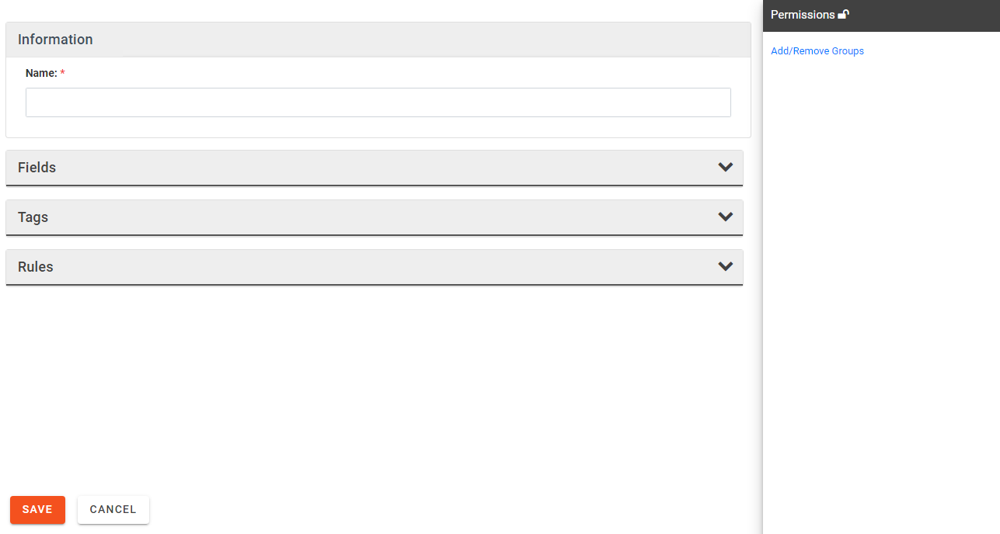
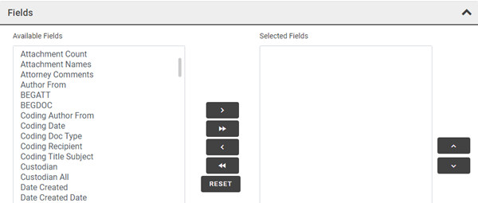
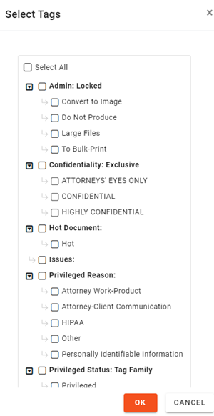

Open the Coding Forms window from Case Settings. For further instructions see
Click the  button to create a new coding form.
button to create a new coding form.

Enter a Name for the form and complete the following steps as needed.
Permissions: If the form should be restricted to certain user groups:
-
Click the hyperlink Add/Remove Groups to open the Group Security dialog.
-
Select needed groups and click OK.

Tip: To make a coding form available to all groups that are currently defined for the case, click Select All. The form will be unavailable for groups added after this selection (unless you add them).
Fields: Select the fields to be displayed on the Record View pane:
-
Expand the Fields section of the Coding Form configuration area.

-
To select all fields, click .
-
To select individual fields, double-click the fields in the Available Fields list.
-
To select multiple items, click a field name, then Shift+click or Ctrl+click additional fields to choose a contiguous or non-contiguous set, respectively. When needed fields have been selected, click .
Field order: When needed fields have been selected, organize them in a way to best meet your users’ needs:
-
In the Selected Fields area, click a field to be reordered.
-
Click Up or Down until the field is in the desired location.
-
Repeat these steps to reorder other fields.
Tags:
-
Expand the Tags section of the Coding Form configuration area, then click .

-
Select the tag groups and tags to be included.

Note: If a tag group has the Exclusive rule, all tags in the group must be selected.
-
Click OK in the Select Tags dialog box.
Tag group order: When needed tags have been added, organize them in a way to best meet your users’ needs:
- In the Tags area, click a tag group to be reordered.
- Click or until the tag group is in the desired location.
- Repeat these steps to reorder other tag groups.
Rules:
See
When finished, click  .
.
Repeat this procedure to configure other coding forms.